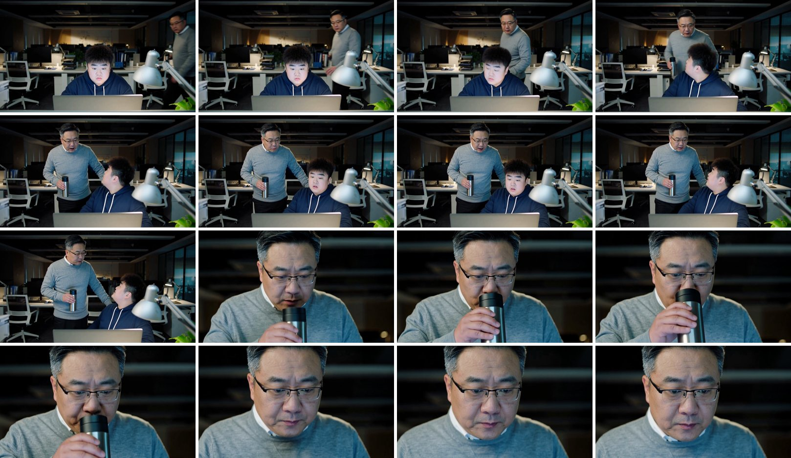
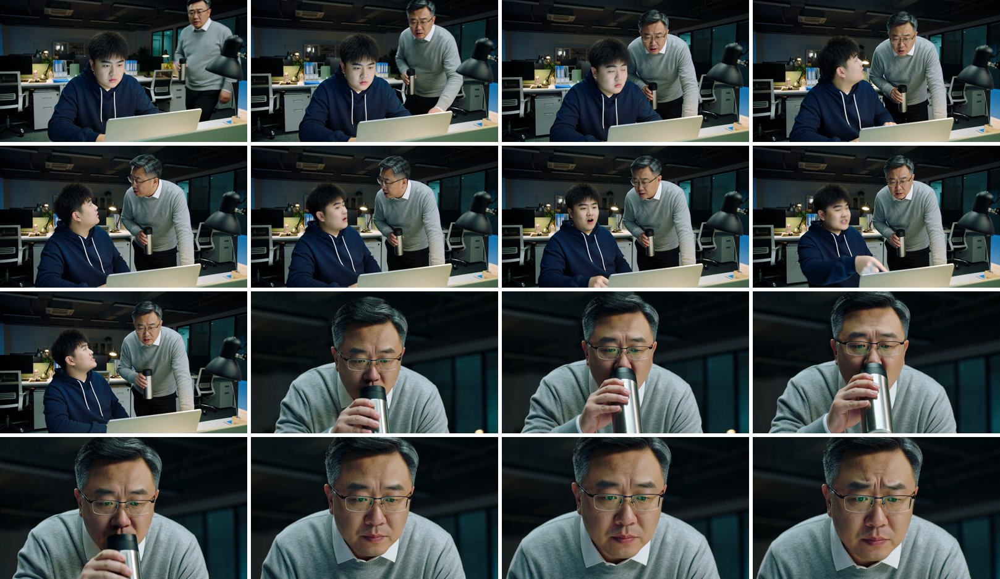
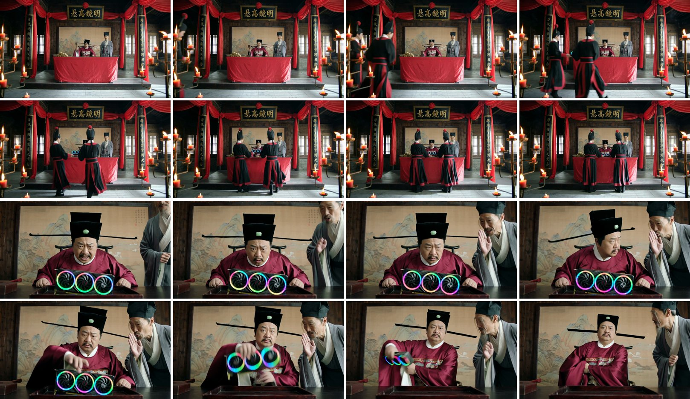
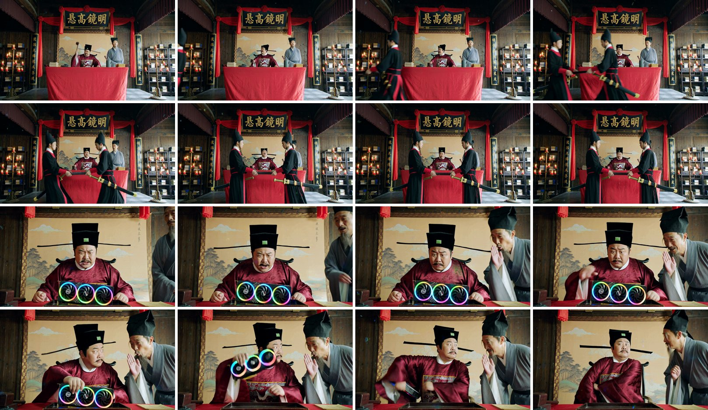
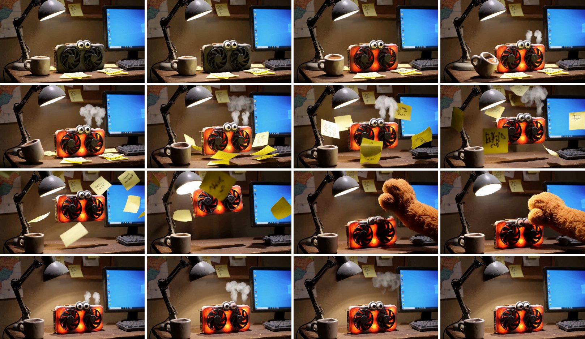
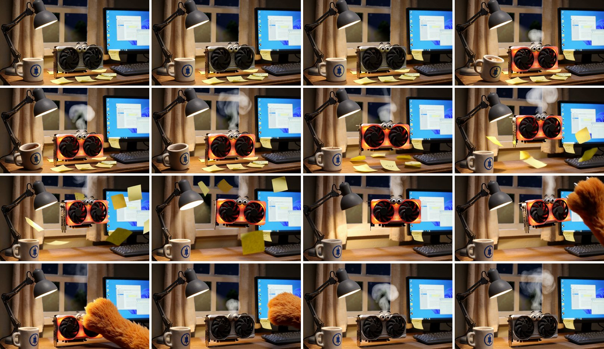
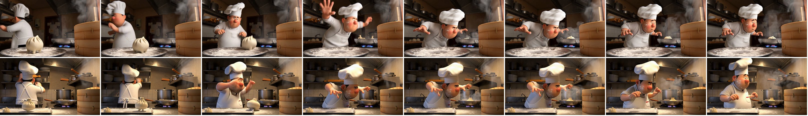

Pika H3 Flex 实测
RTX 4080 16GB · ComfyUI 0.39 · 官方 MiniMax H3 fl2va 剪枝 int8 底模 · 2026-10-31～11-01 · 4 组同提示词、同种子对比：官方示例 5 秒，加 3 个自写的 8 秒剧本
Pika-H3-Flex 是 Pika 在 MiniMax H3 上后训练的 LoRA，6 步出带同步声音的视频（原版官方模板是 20 步）。官方推理包要全精度底模，只在 H100 80GB 上测过；这里用的是 Comfy-Org 重新打包的 bf16 LoRA，加官方剪枝 int8 底模，在一张 RTX 4080 上的 ComfyUI 里跑。Pika 说 ComfyUI 端到端出片没有验证过，结果可能和官方推理包不一样。
结论 写实、对白类的短剧可以直接用 Flex：8 秒一条 5.5 分钟，原版要 17 分钟。台词、切点、人物、笑点动作都和原版一样准，画面更清楚。黏土、定格、手绘这类手作风格，Flex 会往精致的 3D 渲染上偏，要这种味道先用原版。
- 速度：三条 8 秒都是 327～330 秒，原版 1008～1011 秒，非常稳定。两边每步耗时一样（约 49 秒），快全靠步数少（6 对 20）。
- 台词：两组对白、共 6 句，两边转写都一字不差，只有“呈上”被识别成同音的“承上”，这是转写的问题，不是念错了。“五零九零”念对了。AI 合成声那句，两边都让画面里的人闭着嘴，声音确实是“从电脑里出来的”。
- 切点：提示词写 4.5 秒、4.0 秒切，两边实际都在 ±0.25 秒以内。
- 剧情：两组笑点两边都演到了：领导被 AI 叫“领导好”愣住，县太爷把显卡塞进袖子坐正。细处各有输赢：Flex 让小王指了电脑、让显卡冷却变回灰色；原版让衙役真把显卡抬进了公堂（Flex 让衙役拎的是刀）。
- 风格：黏土那组差别最大。原版是哑光的手捏黏土，杯子都是歪歪扭扭的；Flex 做成了光滑的 3D 微缩模型，显卡像真显卡。清晰度指标高在这里不是好事。
- 同一个种子：4 组里有 3 组两边的构图、走位大体一致（前两组第二镜几乎一样），可以先用 Flex 试种子，挑中了再用原版出，但不保证一致。
- 声音：Flex 4 组都更响一点（高 0.4～3.9 LUFS）。音效、配乐对不对得上动作没有逐条打分，可以自己听：对比视频第一遍放原版的声音，第二遍放 Flex 的。
- 局限：每组只跑了一个种子；首尾帧、15 秒还没测。
打分表
按提示词里写的节拍逐条看画面（每 0.5 秒一帧），台词、切点用转写和场景检测量。
| 组 | 节拍 | 原版 20 步 | Flex 6 步 |
|---|---|---|---|
| ① 实习生 | 两人长相、衣着照描述 | 做到 | 做到 |
| 领导走过来俯身问话 | 做到 | 做到 | |
| 小王转身指着电脑 | 只回了头 | 做到 | |
| 4.5 秒切领导特写 | 4.75 秒 | 4.71 秒 | |
| AI 声音响起时两人闭嘴 | 做到 | 做到 | |
| 愣住、慢慢放下保温杯 | 做到 | 做到 | |
| 脸被屏幕照蓝 | 没有 | 没有 | |
| ② 县太爷 | 匾额“明镜高悬”写对 | 做到 | 做到 |
| 拍惊堂木 | 做到 | 做到 | |
| 衙役抬着发光显卡进来 | 做到 | 拎的是刀 | |
| 4 秒切近景 | 3.92 秒 | 4.04 秒 | |
| 师爷捂嘴耳语 | 做到 | 做到 | |
| 抓显卡塞进袖子、坐正 | 做到 | 做到 | |
| 乌纱帽动起来不重影 | 有重影 | 有重影 | |
| ③ 显卡起飞 | 黏土手作质感 | 做到 | 像 3D 模型 |
| 越转越快、烧红冒烟 | 做到 | 做到 | |
| 杯子被震得晃 | 歪了 | 挪了一点 | |
| 起飞、便利贴乱飞 | 做到 | 做到 | |
| 撞到台灯、台灯晃 | 看不出 | 看不出 | |
| 黏土猫爪拍回桌上 | 毛绒爪 | 毛绒爪 | |
| 风扇停、变回原色冒烟 | 冒烟但一直红 | 做到 |
另外：6 条都没有把台词烧成字幕（提示词末尾都写了“画面上没有字幕”）。
① 实习生：写实，三个声音
深夜办公室。领导端着保温杯过来：“小王，又摸鱼呢？”小王指着电脑：“没有，我在带实习生。”4.5 秒切到领导特写，笔记本里传出 AI 合成女声：“领导好，我是实习生。”领导愣住。
测：写实人物、三个人的台词、画外的 AI 声（画面里的人不该张嘴）、按时间切镜。提示词 prompts/office_intern.txt。


两条结构几乎一样，第二镜（领导喝水、放下杯子）差不多是同一个画面。原版第一镜景别更大，小王只回了头；Flex 人更近，小王指了电脑，表演更足。台词转写两边都一字不差。
② 县太爷：古装，道具和反转
明代公堂，“明镜高悬”匾。县太爷拍惊堂木：“大胆！呈上证物！”衙役抬进一块 RGB 灯效的显卡。4 秒切近景：“此乃何物？”师爷捂嘴：“回大人，五零九零。”县太爷左右一看，把显卡塞进袖子，坐正装没事。
测：古装和布景、匾额大字、道具、惊堂木音效、数字念法、按时间切镜、结尾的动作反转。提示词 prompts/magistrate_gpu.txt。


匾额两边都按古式从右往左写对了。原版第一镜衙役真把发光的显卡抬到了桌前；Flex 的衙役拎着刀进来，显卡到第二镜才直接出现在桌上。第二镜两边几乎一样，抓显卡、塞袖子、坐正都演到了。乌纱帽上的绿色帽饰和帽子重影两边都有，是底模的毛病，不是 Flex 带来的。
③ 显卡起飞：黏土定格，无台词
书桌上一块长着眼睛的黏土显卡，风扇越转越快，烧红冒烟，像无人机一样飞起来，便利贴满天飞，撞到台灯；一只猫爪从右边伸进来，一巴掌把它拍回桌上，冒出一缕烟。
测：手作风格、物理（起飞、纸片、杯子晃）、音效和配乐跟着动作走、一镜到底。提示词 prompts/clay_gpu.txt。


这组差别最大。原版是哑光的手捏黏土，杯子、显卡边缘都圆乎乎的，最像定格动画；Flex 的显卡、杯子、台灯都像精致的 3D 模型，只剩眼睛还像黏土。节拍两边都基本演全了，Flex 起飞更明显，结尾还让显卡冷却回了灰色；原版的杯子被震歪了，显卡最后一直是红的。两边的猫爪都是毛绒的，不是黏土。都是一镜到底，没有乱切。
⓪ 官方示例：卡通包子（5 秒）
Comfy-Org 模板自带的提示词：厨师包包子，包子自己长腿跑进锅里。

两条都把包子送进了锅里。Flex 演全了转身、扑空、最后直起身；原版到最后一秒还弯着腰。这组两边构图不一样。皮克斯式卡通 Flex 没有跑偏，只是背景细节更多。
数据
| 组 | 生成 | 清晰度 | 运动量 | 响度 | 台词字错率 | 切点 | |
|---|---|---|---|---|---|---|---|
| ⓪ 示例 5 秒 | 原版 | 474.7 秒 | 95.6 | 6.06 | -10.5 | — | — |
| Flex | 162.4 秒 | 157.0 | 5.44 | -10.1 | — | — | |
| ① 实习生 | 原版 | 1010.6 秒 | 39.4 | 2.72 | -11.0 | 0% | 4.75 秒 |
| Flex | 329.7 秒 | 89.8 | 3.36 | -9.8 | 0% | 4.71 秒 | |
| ② 县太爷 | 原版 | 1011.2 秒 | 221.3 | 4.48 | -14.2 | 5.9%* | 3.92 秒 |
| Flex | 328.5 秒 | 389.9 | 4.80 | -10.3 | 5.9%* | 4.04 秒 | |
| ③ 显卡起飞 | 原版 | 1007.8 秒 | 82.4 | 5.95 | -12.9 | 无台词 | 无 |
| Flex | 326.7 秒 | 178.3 | 4.57 | -10.9 | 无台词 | 无 |
生成时间是 ComfyUI 记的开始到结束，含加载、初始化和解码。清晰度是每秒一帧灰度图拉普拉斯方差的平均；运动量是相邻帧（缩到 1/4）灰度差的平均；响度单位 LUFS。台词用 mlx-whisper large-v3-turbo 转写（不给原文提示），去标点后逐字比；* 两边错的都是同一个字：“呈上”转成了同音的“承上”。切点用 ffmpeg 场景检测。③ 没有台词，转写出来的“字幕志愿者 李宗盛”是 Whisper 在没人说话时的常见幻觉。
怎么跑的
- 共同部分：底模
minimax_h3_fl2va_pruned_int8_convrot、文本编码器qwen3vl_32b_minimax_h3_nvfp4_awq、视频 VAE int8、音频 VAE fp32、BasicGuider（CFG 1），1280×736，种子都是 20261031。8 秒是 192 帧，5 秒是 124 帧。 - Flex：加
pika_h3_flex_fl2va_v1_bf16（Comfy-Org 重打包，1.96 GB），采样器 lcm，ManualSigmas1.0, 0.972973, 0.923077, 0.8, 0.571429, 0.333333, 0.0，都照模板。 - 原版：照官方模板，res_multistep / simple 20 步，不挂 LoRA。
- 剧本：三个 8 秒剧本都是纯文本生视频（英文描述，台词写成
<d>[Chinese] …</d>），台词控制在每秒 3 字左右，数字写成念法。 - 显存：RTX 4080 16GB，ComfyUI 用
--reserve-vram 3 --disable-smart-memory --cache-none启动，8 秒的 6 条一次都没崩。
还没测的
- 首尾帧（FL2VA）：比如拿人物定妆照做首帧，看 Flex 能不能保住脸。
- 15 秒：按每步耗时推算，Flex 一条约 17 分钟（原版 55 分钟），还没实测。
- 多个种子：每组只跑了一个种子；“拿 Flex 挑种子”能不能成立，要多跑几个种子看构图是否一致。
- 声音内容：音效、配乐是否跟着动作走，要人听。
- 参考图（Ref2VA）：要另一个约 20 GB 的底模，没装。